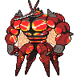

マッシブーンのデータ
基本ステータス
もちもの・メダル・条件付き効果なし。割合の値は％です。待ち時間は短縮率、移動速度はゲーム内の値です。
| Lv | HP | 攻撃 | 防御 | 特攻 | 特防 | 移動速度 | 急所率 | 待ち時間 | HP吸収率 | 通常攻撃の速さ | 貫通 |
|---|---|---|---|---|---|---|---|---|---|---|---|
| 1 | 3250 | 170 | 120 | 20 | 80 | 3700 | 0 | 0 | 0 | 10 | 0 |
| 2 | 3412 | 180 | 134 | 23 | 91 | 3700 | 0 | 0 | 0 | 10.71 | 0 |
| 3 | 3590 | 191 | 149 | 27 | 103 | 3700 | 0 | 0 | 0 | 11.49 | 0 |
| 4 | 3786 | 203 | 165 | 31 | 116 | 3700 | 0 | 0 | 0 | 12.35 | 0 |
| 5 | 4001 | 216 | 183 | 35 | 130 | 3850 | 10 | 0 | 5 | 13.29 | 0 |
| 6 | 4238 | 231 | 203 | 40 | 146 | 3850 | 10 | 0 | 5 | 14.33 | 0 |
| 7 | 4499 | 247 | 225 | 45 | 163 | 4000 | 10 | 0 | 5 | 15.48 | 0 |
| 8 | 4786 | 265 | 249 | 51 | 182 | 4000 | 10 | 0 | 5 | 16.74 | 0 |
| 9 | 5103 | 285 | 275 | 58 | 203 | 4150 | 20 | 0 | 10 | 18.13 | 0 |
| 10 | 5452 | 306 | 304 | 65 | 226 | 4150 | 20 | 0 | 10 | 19.66 | 0 |
| 11 | 5836 | 330 | 336 | 73 | 251 | 4300 | 20 | 0 | 10 | 21.35 | 0 |
| 12 | 6259 | 356 | 371 | 82 | 279 | 4300 | 20 | 0 | 10 | 23.21 | 0 |
| 13 | 6724 | 385 | 410 | 92 | 309 | 4300 | 20 | 0 | 15 | 25.26 | 0 |
| 14 | 7236 | 417 | 453 | 103 | 343 | 4300 | 20 | 0 | 15 | 27.51 | 0 |
| 15 | 7800 | 452 | 500 | 115 | 380 | 4300 | 20 | 0 | 15 | 29.99 | 0 |

マッシブーン急所・HP吸収などの仕様
急所の対象は通常攻撃です。
通常攻撃
効果・条件の説明
命中するたびにマッスルゲージが1増えます。3回目は2発のパンチを出す強化攻撃になり、各命中でHPを回復し、ゲージが1ずつ増えます。
わざ1
メガトンパンチ
効果・条件の説明
指定方向へ跳び、地面にパンチして範囲内を攻撃します。
効果・条件
相手チームのポケモンに当てると、1匹につきマッスルゲージが1段階増えます。
とびかかる
効果・条件の説明
指定方向へ飛びかかり、相手の攻撃と移動速度を下げます。
連続使用の制限
とびかかるは2回分を蓄えられるが、連続使用には最低1秒の間隔が必要。
通常版の効果・条件
命中すると相手の攻撃を30%、移動速度を1秒間30%下げます。相手チームのポケモン1匹に命中するごとにマッスルゲージが1増えます。使用後は自分の通常攻撃速度が2秒間30%上がります。
とびかかる+
効果・条件の説明
強化後の変更点：命中した相手チームのポケモン1体につき攻撃が2秒間10%上がります。最大5回重なります。
連続使用の制限
とびかかるは2回分を蓄えられるが、連続使用には最低1秒の間隔が必要。
通常版の効果・条件
命中すると相手の攻撃を30%、移動速度を1秒間30%下げます。相手チームのポケモン1匹に命中するごとにマッスルゲージが1増えます。使用後は自分の通常攻撃速度が2秒間30%上がります。
うちおとす
効果・条件の説明
アッパーで相手を打ち上げ、地面へたたきつけます。
通常版の効果・条件
相手が空中にいる間に再使用すると、相手の現在位置へ移動して、すぐに地面へたたき落とします。再使用しなくても自然に落下して周囲へダメージを与えます。
うちおとす+
効果・条件の説明
強化後の変更点：相手を地面に叩きつける攻撃の範囲が広がり、当たった相手チームのポケモン1体につきマッスルゲージが2増えます。
通常版の効果・条件
相手が空中にいる間に再使用すると、相手の現在位置へ移動して、すぐに地面へたたき落とします。再使用しなくても自然に落下して周囲へダメージを与えます。
わざ2
とどめばり
効果・条件の説明
マッスルゲージをすべて消費し、指定方向の相手を攻撃して押し出します。
効果・条件
命中した相手を押し出し、0.2秒間行動不能にします。消費したマッスルゲージ1段階につきダメージが12.5%増えます。このわざでポケモンをKOすると、自分の最大HPの10%を回復します。
きゅうけつ
効果・条件の説明
相手をつかんで拘束し、継続ダメージを与えながら自分のHPを回復します。
中断・妨害無効の相手
きゅうけつは自分が行動不能になるか相手が脱出すると終了する。妨害無効の相手には強化されたダメージ・回復が1回だけ発生する。
通常版の効果・条件
使用時にマッスルゲージをすべて消費します。攻撃は基本4回で、消費ゲージ2段階につき1回増えます。基準となるダメージも、消費ゲージ1段階につき1.5%上がります。
きゅうけつ+
効果・条件の説明
強化後の変更点：連続してダメージを与えるたびに、次のダメージが5%ずつ増えます。
中断・妨害無効の相手
きゅうけつは自分が行動不能になるか相手が脱出すると終了する。妨害無効の相手には強化されたダメージ・回復が1回だけ発生する。
通常版の効果・条件
使用時にマッスルゲージをすべて消費します。攻撃は基本4回で、消費ゲージ2段階につき1回増えます。基準となるダメージも、消費ゲージ1段階につき1.5%上がります。
ばかぢから
効果・条件の説明
マッスルゲージをすべて消費して相手をつかみ、前方の地面へたたきつけます。
無敵・妨害への耐性
つかんで投げる動作中は妨害無効になります。
通常版の効果・条件
消費したマッスルゲージ1段階につき、わざのダメージが12.5%増えます。つかみに成功したときのシールドは2秒間です。
ばかぢから+
効果・条件の説明
強化後の変更点：マッスルゲージが最大になると、このわざの待ち時間が3秒短くなります。
無敵・妨害への耐性
つかんで投げる動作中は妨害無効になります。
通常版の効果・条件
消費したマッスルゲージ1段階につき、わざのダメージが12.5%増えます。つかみに成功したときのシールドは2秒間です。
ユナイトわざ
ユナイトわざ使用後の共通強化
移動速度30%上昇、わざの待ち時間短縮30%、最大HPの20%のシールド（6秒）
ウルトラバルクマスキュラー
効果・条件の説明
範囲内を攻撃した後、残りHPの割合が最も低い相手を狙って追撃します。
無敵・妨害への耐性
このわざの動作中は妨害無効になります。
効果・条件
追撃は狙った相手の減少HPの50%分の追加ダメージを与えます。野生ポケモンには、この減少HPの追加分は発生しません。